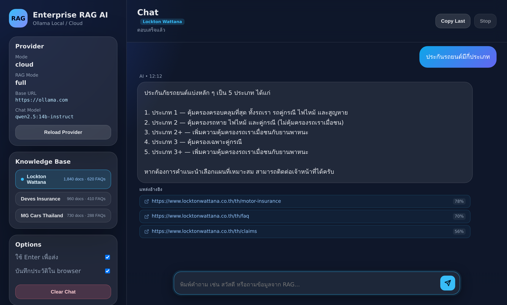
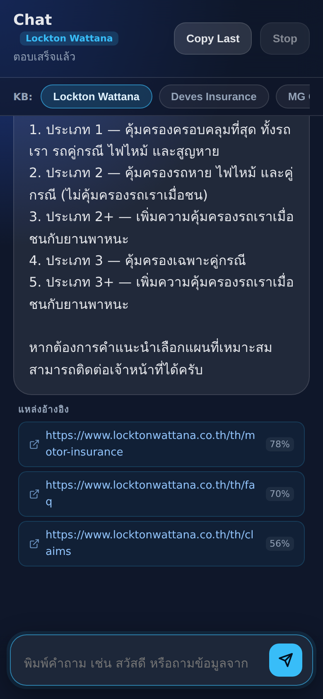

<title>เบื้องหลัง Enterprise RAG Chat</title>
<link rel="preconnect" href="https://fonts.googleapis.com">
<link rel="stylesheet" href="https://fonts.googleapis.com/css2?family=Chakra+Petch:wght@500;600;700&family=Sarabun:wght@400;600&family=IBM+Plex+Mono:wght@400;600&display=swap">
<style>
/* Layout: single reading column (~68ch) with figures that break slightly wider; lab-notebook feel */
:root{
  --bg:#f6f7f4; --paper:#ffffff; --ink:#1b2320; --muted:#5d6a64; --line:#d9ded9;
  --accent:#0f7a63; --accent-weak:#e1f1ec; --warn:#b4561c; --warn-weak:#f8e8dc; --blue:#2c5fa8; --blue-weak:#e3ebf7;
  --display:"Chakra Petch","Sarabun",system-ui,sans-serif; --body:"Sarabun",system-ui,sans-serif; --mono:"IBM Plex Mono",ui-monospace,monospace;
}
@media (prefers-color-scheme:dark){:root:not([data-theme="light"]){
  --bg:#111614; --paper:#182019; --ink:#e4ebe7; --muted:#9aa8a1; --line:#2a3530;
  --accent:#4cc9a6; --accent-weak:#16302a; --warn:#f0a064; --warn-weak:#35241a; --blue:#86aeea; --blue-weak:#1a2638; color-scheme:dark}}
:root[data-theme="dark"]{
  --bg:#111614; --paper:#182019; --ink:#e4ebe7; --muted:#9aa8a1; --line:#2a3530;
  --accent:#4cc9a6; --accent-weak:#16302a; --warn:#f0a064; --warn-weak:#35241a; --blue:#86aeea; --blue-weak:#1a2638; color-scheme:dark}
*{box-sizing:border-box}
body{background:var(--bg);color:var(--ink);font:17px/1.8 var(--body);padding-inline:16px}
main{max-width:760px;margin:0 auto;padding-block:40px 64px}
h1,h2,h3{font-family:var(--display);line-height:1.25;text-wrap:balance}
h1{font-size:clamp(28px,6vw,42px);margin:8px 0 12px}
h2{font-size:24px;margin:48px 0 8px;padding-top:16px;border-top:1px solid var(--line)}
h3{font-size:18px;margin:24px 0 4px}
p{margin:0 0 14px}
.kicker{font:600 12px var(--mono);letter-spacing:.12em;text-transform:uppercase;color:var(--accent)}
.lede{font-size:19px;color:var(--muted)}
code,.m{font-family:var(--mono);font-size:.84em;background:var(--accent-weak);color:var(--accent);padding:1px 5px;border-radius:4px}
a{color:var(--accent)}
.q{background:var(--warn-weak);border-left:3px solid var(--warn);padding:10px 14px;margin:14px 0;border-radius:0 6px 6px 0}
.q b{color:var(--warn);font-family:var(--display)}
.q p:last-child{margin:0}
figure{margin:22px 0;background:var(--paper);border:1px solid var(--line);border-radius:10px;padding:14px;overflow-x:auto}
figure svg{display:block;width:100%;min-width:560px;height:auto}
figure img{display:block;border-radius:6px;margin:0 auto}
figcaption{font-size:14px;color:var(--muted);margin-top:8px}
.shots{display:grid;grid-template-columns:3fr 1fr;gap:12px;align-items:start}
@media(max-width:600px){.shots{grid-template-columns:1fr}}
table{border-collapse:collapse;width:100%;font-size:15px;font-variant-numeric:tabular-nums}
th,td{text-align:left;padding:7px 10px;border-bottom:1px solid var(--line);vertical-align:top}
th{font:600 12px var(--mono);text-transform:uppercase;letter-spacing:.06em;color:var(--muted)}
td:first-child{font-family:var(--mono);font-size:13px;white-space:nowrap;color:var(--accent)}
.tbl{overflow-x:auto}
.stats{display:grid;grid-template-columns:repeat(4,1fr);gap:10px;margin:24px 0}
@media(max-width:600px){.stats{grid-template-columns:repeat(2,1fr)}}
.stat{border-top:3px solid var(--accent);background:var(--paper);padding:10px 12px}
.stat b{display:block;font:700 26px var(--display);font-variant-numeric:tabular-nums}
.stat span{font-size:13px;color:var(--muted);line-height:1.4;display:block}
.svg-t{fill:var(--ink);font-family:"Sarabun",sans-serif}
.svg-m{fill:var(--muted);font-family:"IBM Plex Mono",monospace}
.fb{background:var(--paper);border:1px dashed var(--line);border-radius:10px;padding:14px;white-space:pre-wrap;font-size:15px;min-width:0}
button{font:600 14px var(--body);background:var(--accent);color:var(--paper);border:0;border-radius:6px;padding:8px 14px;cursor:pointer}
button:focus-visible{outline:2px solid var(--warn);outline-offset:2px}
.refs{font-size:14px;color:var(--muted)}
</style>

<main>
<div class="kicker">Enterprise AI · Hybrid RAG · Thai</div>
<h1>เบื้องหลังแชตบอตองค์กรที่ “ตอบจากเอกสารจริง”</h1>
<p class="lede">ผ่าโค้ด Enterprise RAG Chat ทีละชั้น ตั้งแต่ดูดเว็บ ตัด chunk ทำ embedding ไปจนถึงค้นเวกเตอร์ใน PostgreSQL พร้อมเหตุผลว่าทำไมแต่ละค่าถึงถูกตั้งไว้แบบนั้น</p>

<div class="stats">
  <div class="stat"><b>1,024</b><span>มิติของเวกเตอร์ bge-m3 ต่อ 1 chunk</span></div>
  <div class="stat"><b>1,200</b><span>ตัวอักษรสูงสุดต่อ chunk (overlap 180)</span></div>
  <div class="stat"><b>0.40</b><span>cosine similarity ขั้นต่ำที่ยอมรับ</span></div>
  <div class="stat"><b>3</b><span>องค์กรในระบบเดียว (multi-tenant)</span></div>
</div>

<h2>ปัญหาที่ต้องแก้</h2>
<p>LLM อย่าง ChatGPT ตอบเก่ง แต่ไม่รู้ว่าบริษัทเรามีประกันกี่แผน เบอร์ฝ่ายเคลมคืออะไร และเมื่อไม่รู้ก็มักเดาให้ฟังดูน่าเชื่อ (hallucination) การ fine-tune โมเดลใหม่ทุกครั้งที่ข้อมูลเปลี่ยนก็แพงและช้า</p>
<p><strong>RAG (Retrieval-Augmented Generation)</strong> ของ Lewis et al. (2020) แก้โดยแยก “ความจำ” ออกจาก “การพูด” ระบบค้นเอกสารที่เกี่ยวข้องก่อน แล้วส่งเอกสารนั้นให้ LLM อ่านเป็นบริบท (context) พร้อมคำสั่งว่าให้ตอบจากบริบทเท่านั้น ข้อมูลเปลี่ยนเมื่อไรก็แค่ index ใหม่ ไม่ต้องเทรนโมเดล</p>

<figure>
<svg viewBox="0 0 760 300" role="img" aria-label="สถาปัตยกรรมสองฝั่ง offline และ runtime">
  <defs><marker id="a" viewBox="0 0 10 10" refX="9" refY="5" markerWidth="7" markerHeight="7" orient="auto"><path d="M0,0L10,5L0,10z" fill="var(--muted)"/></marker></defs>
  <text x="10" y="22" class="svg-m" font-size="12">OFFLINE · สร้างฐานความรู้ (scripts/01–12)</text>
  <g font-size="13" class="svg-t">
    <rect x="10" y="34" width="110" height="46" rx="6" fill="var(--blue-weak)" stroke="var(--blue)"/><text x="65" y="62" text-anchor="middle">Crawl เว็บ</text>
    <rect x="140" y="34" width="110" height="46" rx="6" fill="var(--blue-weak)" stroke="var(--blue)"/><text x="195" y="62" text-anchor="middle">Clean (AI)</text>
    <rect x="270" y="34" width="110" height="46" rx="6" fill="var(--blue-weak)" stroke="var(--blue)"/><text x="325" y="62" text-anchor="middle">Chunk</text>
    <rect x="400" y="34" width="110" height="46" rx="6" fill="var(--accent-weak)" stroke="var(--accent)"/><text x="455" y="62" text-anchor="middle">Embed bge-m3</text>
    <rect x="530" y="34" width="220" height="46" rx="6" fill="var(--blue-weak)" stroke="var(--blue)"/><text x="640" y="62" text-anchor="middle">Facts · FAQ · Knowledge</text>
  </g>
  <g stroke="var(--muted)" stroke-width="1.5" marker-end="url(#a)"><line x1="120" y1="57" x2="138" y2="57"/><line x1="250" y1="57" x2="268" y2="57"/><line x1="380" y1="57" x2="398" y2="57"/><line x1="510" y1="57" x2="528" y2="57"/>
  <line x1="455" y1="80" x2="455" y2="126"/><line x1="640" y1="80" x2="560" y2="126"/></g>
  <rect x="250" y="128" width="400" height="50" rx="8" fill="var(--paper)" stroke="var(--ink)" stroke-width="1.5"/>
  <text x="450" y="150" text-anchor="middle" class="svg-t" font-size="14" font-weight="600">Supabase · PostgreSQL + pgvector</text>
  <text x="450" y="168" text-anchor="middle" class="svg-m" font-size="11">documents · faq_items · company_facts · staff_contacts</text>
  <text x="10" y="210" class="svg-m" font-size="12">RUNTIME · ต่อ 1 คำถาม (app/rag.py → main.py)</text>
  <g font-size="13" class="svg-t">
    <rect x="10" y="222" width="100" height="46" rx="6" fill="var(--warn-weak)" stroke="var(--warn)"/><text x="60" y="250" text-anchor="middle">คำถาม</text>
    <rect x="130" y="222" width="100" height="46" rx="6" fill="var(--warn-weak)" stroke="var(--warn)"/><text x="180" y="250" text-anchor="middle">Intent</text>
    <rect x="250" y="222" width="100" height="46" rx="6" fill="var(--accent-weak)" stroke="var(--accent)"/><text x="300" y="250" text-anchor="middle">Embed</text>
    <rect x="370" y="222" width="130" height="46" rx="6" fill="var(--warn-weak)" stroke="var(--warn)"/><text x="435" y="250" text-anchor="middle">Vector search</text>
    <rect x="520" y="222" width="100" height="46" rx="6" fill="var(--warn-weak)" stroke="var(--warn)"/><text x="570" y="250" text-anchor="middle">Context</text>
    <rect x="640" y="222" width="110" height="46" rx="6" fill="var(--warn-weak)" stroke="var(--warn)"/><text x="695" y="250" text-anchor="middle">LLM ตอบ</text>
  </g>
  <g stroke="var(--muted)" stroke-width="1.5" marker-end="url(#a)"><line x1="110" y1="245" x2="128" y2="245"/><line x1="230" y1="245" x2="248" y2="245"/><line x1="350" y1="245" x2="368" y2="245"/><line x1="500" y1="245" x2="518" y2="245"/><line x1="620" y1="245" x2="638" y2="245"/>
  <line x1="435" y1="220" x2="435" y2="181"/><line x1="180" y1="220" x2="300" y2="181"/></g>
  <text x="200" y="198" class="svg-m" font-size="10">SQL ตรง (fact/staff)</text>
</svg>
<figcaption>รูป 1 · ระบบแบ่งเป็นสองฝั่ง ฝั่ง offline ใช้ LLM หนัก ๆ เตรียมข้อมูลล่วงหน้าครั้งเดียว ฝั่ง runtime ต้องเร็ว จึงเรียก LLM ให้น้อยที่สุด</figcaption>
</figure>

<div class="q"><b>ทำไมต้องแยกสองฝั่ง?</b><p>งานอย่างทำความสะอาดข้อความหรือสร้าง FAQ ใช้ LLM หลายหมื่นครั้ง ถ้าทำตอนผู้ใช้ถามจะรอเป็นนาที การย้ายไปทำ offline ทำให้ runtime เหลือ LLM call หลักแค่ 1–2 ครั้งต่อคำถาม</p></div>

<h2>1. Crawl และ OCR: ข้อมูลเข้ามาอย่างไร</h2>
<p><code>01_crawl_website.py</code> ใช้ <code>aiohttp</code> แบบ async ดึงหน้าเว็บพร้อมกัน 5 connection (<code>CRAWL_CONCURRENCY=5</code>) เพดาน 20,000 หน้า แล้ว <code>02_extract_sections.py</code> ใช้ BeautifulSoup ลบส่วนที่ไม่ใช่เนื้อหา เช่น <code>nav, header, footer, .cookie, .ads</code> ออกก่อนแบ่งตามหัวข้อ</p>
<div class="q"><b>แล้ว OCR ล่ะ?</b><p>เวอร์ชันปัจจุบันยังไม่มี OCR crawler ตั้งใจข้ามไฟล์ 18 นามสกุล เช่น <code>.pdf .jpg .png .docx</code> เพราะเว็บเป้าหมายมีเนื้อหาเป็น HTML อยู่แล้ว OCR ของภาษาไทยยังมีปัญหาสระลอยและวรรณยุกต์ผิดตำแหน่ง ถ้าข้อความผิดตั้งแต่ต้นทาง embedding ที่ได้ก็ผิดตาม (garbage in, garbage out) เมื่อไรที่ต้องรองรับโบรชัวร์ PDF หรือสแกนกรมธรรม์ OCR จะเป็นขั้นที่ต่อเพิ่มก่อน step 02 โดยต้องมีขั้นตรวจคุณภาพข้อความตามมา</p></div>

<h2>2. Chunking: ทำไม 1,200 ตัวอักษร ทับกัน 180</h2>
<p>เราไม่ embed ทั้งหน้าเว็บเป็นก้อนเดียว เพราะเวกเตอร์ 1 ตัวจะกลายเป็น “ค่าเฉลี่ย” ของหลายเรื่อง ค้นเรื่องไหนก็เจอแบบกลาง ๆ แต่ถ้าหั่นเล็กเกินไป chunk ก็ขาดบริบท <code>04_semantic_chunking_ai.py</code> จึงหั่นตามขอบเขตความหมาย คือย่อหน้าและจบประโยค (<code>. ? !</code>) แล้วค่อยรวมจนเกือบถึง <code>MAX_CHUNK = 1200</code></p>

<figure>
<svg viewBox="0 0 760 170" role="img" aria-label="chunk overlap">
  <rect x="20" y="30" width="300" height="40" fill="var(--accent-weak)" stroke="var(--accent)"/>
  <rect x="275" y="80" width="300" height="40" fill="var(--blue-weak)" stroke="var(--blue)"/>
  <rect x="530" y="130" width="210" height="30" fill="var(--accent-weak)" stroke="var(--accent)"/>
  <rect x="275" y="30" width="45" height="90" fill="var(--warn)" opacity=".25"/>
  <rect x="530" y="80" width="45" height="80" fill="var(--warn)" opacity=".25"/>
  <g class="svg-t" font-size="13"><text x="30" y="55">Chunk 1 · ≤1,200 ตัวอักษร</text><text x="340" y="105">Chunk 2</text><text x="590" y="150">Chunk 3</text></g>
  <text x="297" y="20" text-anchor="middle" class="svg-m" font-size="11" fill="var(--warn)">overlap 180 (15%)</text>
</svg>
<figcaption>รูป 2 · ท้าย chunk ก่อนหน้า 180 ตัวอักษรถูกยกมาเป็นหัวของ chunk ถัดไป ประโยคที่ถูกตัดกลางจึงยังอยู่ครบในอย่างน้อยหนึ่ง chunk ส่วน chunk ที่สั้นกว่า 80 ตัวอักษรถูกทิ้ง เพราะมักเป็นเศษเมนูหรือปุ่ม</figcaption>
</figure>

<div class="tbl"><table>
<tr><th>ค่า</th><th>ตั้งไว้</th><th>เหตุผล</th></tr>
<tr><td>MAX_CHUNK</td><td>1,200 ตัวอักษร</td><td>ภาษาไทยไม่เว้นวรรคระหว่างคำ tokenizer จึงตัดเป็น token ย่อยจำนวนมาก 1,200 ตัวอักษรไทยยังอยู่ในหน้าต่าง 8,192 token ของ bge-m3 สบาย ๆ และยาวพอสำหรับหนึ่งหัวข้อ เช่น “เงื่อนไขประกันชั้น 1”</td></tr>
<tr><td>OVERLAP</td><td>180 (15%)</td><td>อยู่ในช่วง 10–20% ที่นิยมใช้ ถ้ามากกว่านี้ข้อมูลซ้ำใน index จะเยอะขึ้นโดยไม่ช่วย recall เพิ่ม</td></tr>
<tr><td>min length</td><td>80</td><td>กรอง noise เช่น “อ่านต่อ” หรือ “ติดต่อเรา”</td></tr>
</table></div>

<p>อีกเทคนิคหนึ่งคือข้อความที่นำไป embed ไม่ใช่เนื้อหาล้วน ๆ แต่มี metadata ที่ LLM สกัดไว้แปะหน้า chunk ด้วย ได้แก่ <code>Title, Heading, Topic, Category, Keywords</code> chunk ที่เนื้อหาพูดแค่ว่า “คุ้มครองสูงสุด 1 ล้านบาท” จึงยังรู้ว่าตัวเองเป็นเรื่องประกันรถ ไม่ใช่ประกันสุขภาพ</p>

<h2>3. Embedding: เปลี่ยนความหมายเป็นพิกัด</h2>
<p>Embedding model แปลงข้อความเป็นเวกเตอร์ในปริภูมิ 1,024 มิติ ข้อความที่ความหมายใกล้กันจะชี้ไปทิศใกล้กัน ถึงจะไม่มีคำตรงกันเลยก็ตาม เช่น “เคลม” กับ “แจ้งสินไหม”</p>
<div class="q"><b>ทำไมเลือก BAAI/bge-m3?</b><p>(1) เป็น multilingual ที่รองรับภาษาไทย คำถามไทยจึงค้นเอกสารอังกฤษได้และกลับกัน (2) รับ input ได้ยาวถึง 8,192 token (3) เปิดให้รันเองบน Ollama ข้อมูลลูกค้าไม่ต้องส่งออกไปนอกองค์กร สคริปต์ <code>debug_nomic_thai.py</code> และ <code>test_embed_compare.py</code> ใน repo คือร่องรอยของการทดลองเทียบกับ nomic-embed-text และ mxbai ก่อนตัดสินใจใช้ตัวนี้</p></div>
<p>ระหว่างทางเจอปัญหาจริงคือ bge-m3 บน Ollama บางเวอร์ชันคืนค่า <code>NaN</code> เมื่อ input ยาว ระบบจึงมีทางสำรองดังนี้</p>
<figure><svg viewBox="0 0 760 120" role="img" aria-label="NaN fallback">
<g class="svg-t" font-size="13">
<rect x="10" y="30" width="150" height="50" rx="6" fill="var(--warn-weak)" stroke="var(--warn)"/><text x="85" y="60" text-anchor="middle">embed → NaN ✗</text>
<rect x="190" y="30" width="170" height="50" rx="6" fill="var(--blue-weak)" stroke="var(--blue)"/><text x="275" y="60" text-anchor="middle">ตัดเป็นชิ้นละ 150 ตัว</text>
<rect x="390" y="30" width="170" height="50" rx="6" fill="var(--blue-weak)" stroke="var(--blue)"/><text x="475" y="60" text-anchor="middle">embed ทีละชิ้น ทิ้ง NaN</text>
<rect x="590" y="30" width="160" height="50" rx="6" fill="var(--accent-weak)" stroke="var(--accent)"/><text x="670" y="60" text-anchor="middle">เฉลี่ย + L2 normalize</text></g>
<g stroke="var(--muted)" stroke-width="1.5" marker-end="url(#a)"><line x1="160" y1="55" x2="188" y2="55"/><line x1="360" y1="55" x2="388" y2="55"/><line x1="560" y1="55" x2="588" y2="55"/></g>
<text x="380" y="108" text-anchor="middle" class="svg-m" font-size="12">v = Σvᵢ / ‖Σvᵢ‖  (normalize ให้ยาว 1 เพื่อให้ cosine ยังเทียบกันได้)</text>
</svg><figcaption>รูป 3 · Chunk-averaging fallback ใน <code>_embed_query()</code> ทำให้ทุกคำถามยังได้เวกเตอร์ที่ใช้ค้นได้ แม้โมเดลจะมีบั๊ก</figcaption></figure>

<h2>4. Vector search: cosine similarity และเกณฑ์ 0.40</h2>
<p>ใน Postgres ใช้ pgvector ด้วย operator <code>&lt;=&gt;</code> ซึ่งคือ cosine distance ความคล้ายจึงคำนวณเป็น <code>1 − distance</code> = cos θ ระหว่างเวกเตอร์คำถามกับเวกเตอร์ chunk</p>
<figure><svg viewBox="0 0 760 210" role="img" aria-label="cosine threshold">
<line x1="60" y1="170" x2="700" y2="170" stroke="var(--muted)"/>
<rect x="60" y="150" width="256" height="20" fill="var(--warn)" opacity=".3"/>
<rect x="316" y="150" width="384" height="20" fill="var(--accent)" opacity=".35"/>
<g class="svg-m" font-size="11"><text x="60" y="190" text-anchor="middle">0.0</text><text x="316" y="190" text-anchor="middle">0.40</text><text x="508" y="190" text-anchor="middle">0.70</text><text x="700" y="190" text-anchor="middle">1.0</text></g>
<g class="svg-t" font-size="13"><text x="188" y="140" text-anchor="middle">ตัดทิ้ง · ไม่เกี่ยวข้อง</text><text x="508" y="140" text-anchor="middle">ส่งให้ LLM เป็นบริบท</text></g>
<g font-size="12" class="svg-t"><circle cx="559" cy="100" r="6" fill="var(--accent)"/><text x="559" y="86" text-anchor="middle">0.78 motor-insurance</text>
<circle cx="508" cy="60" r="6" fill="var(--accent)"/><text x="508" y="46" text-anchor="middle">0.70 faq</text>
<circle cx="422" cy="100" r="6" fill="var(--accent)"/><text x="422" y="86" text-anchor="middle">0.56 claims</text>
<circle cx="220" cy="100" r="6" fill="var(--warn)"/><text x="220" y="86" text-anchor="middle">0.31 ข่าวบริษัท</text></g>
<text x="316" y="205" text-anchor="middle" class="svg-m" font-size="10">cos θ = 0.40 ⇔ θ ≈ 66°</text>
</svg><figcaption>รูป 4 · ตัวอย่างคำถาม “ประกันรถยนต์มีกี่ประเภท” เกณฑ์ <code>_SIM_THRESHOLD = 0.40</code> กันไม่ให้เอกสารที่ไม่เกี่ยวข้องหลุดเข้าบริบท (ค่าคะแนนในรูปเป็นตัวอย่างประกอบ)</figcaption></figure>
<div class="q"><b>ทำไม 0.40 ไม่ใช่ 0.7?</b><p>คะแนน cosine ของ bge-m3 ระหว่าง “คำถามสั้น” กับ “ย่อหน้ายาว” มักไม่สูงเท่าคู่ข้อความยาวเท่ากัน ถ้าตั้ง 0.7 คำถามไทยสั้น ๆ จะหาอะไรไม่เจอเลย ส่วน 0.40 ยอมรับ recall สูงไว้ก่อน แล้วปล่อยให้ top-k กับ LLM คัดอีกชั้น สคริปต์ <code>check_rpc_threshold.py</code> และ <code>test_search_quality.py</code> ใช้ทดลองหาค่านี้</p></div>

<div class="tbl"><table>
<tr><th>พารามิเตอร์</th><th>ค่า</th><th>ความหมาย</th></tr>
<tr><td>top-k documents</td><td>6</td><td>จำนวน chunk ที่ดึงมา แต่ละชิ้นตัดเหลือ 600 ตัวอักษร รวมราว 3,600 ตัว ไม่ท่วม context ของ LLM</td></tr>
<tr><td>top-k FAQ</td><td>4</td><td>FAQ ที่ LLM สร้างไว้ล่วงหน้าเป็นคู่ Q/A ทำให้คำถามผู้ใช้ “ชน” กับคำถามได้ตรงกว่า</td></tr>
<tr><td>ivfflat lists</td><td>100</td><td>index แบบแบ่งกลุ่ม pgvector แนะนำ lists ≈ rows/1000 ค่า 100 จึงเหมาะกับราว 100k chunk และค้นเร็วกว่าการเทียบทุกแถว</td></tr>
<tr><td>พื้นที่เก็บ</td><td>4 KB/chunk</td><td>1,024 × float32 (4 byte) = 4,096 byte ถ้ามี 10,000 chunk เวกเตอร์จะใช้พื้นที่ราว 40 MB</td></tr>
<tr><td>company_code</td><td>filter</td><td>แยกข้อมูลแต่ละบริษัทในตารางเดียวกัน (multi-tenant) ลูกค้า A จึงไม่เห็นข้อมูลของ B</td></tr>
</table></div>

<h2>5. Hybrid: บางคำถามไม่ควรใช้เวกเตอร์</h2>
<p>“เบอร์โทรบริษัทคืออะไร” เป็นคำถามแบบ exact ถ้าส่งเข้า vector search อาจได้ย่อหน้าที่ “พูดถึงการติดต่อ” แต่ไม่มีเบอร์ ระบบจึงเริ่มจาก <strong>Intent Router</strong> ซึ่งใช้ keyword ไทยและอังกฤษ (เช่น <code>เบอร์ โทร email ที่อยู่</code> → fact, <code>ใครดูแล เจ้าหน้าที่</code> → staff) แล้วดึงจากตาราง <code>company_facts</code> ด้วย SQL ตรง ๆ ได้ในมิลลิวินาทีและไม่มีทางมั่ว มี fallback 3 ชั้นถ้าไม่เจอ fact_type ที่ต้องการ</p>
<p>นี่คือความหมายของ <strong>Hybrid RAG</strong> ข้อมูลที่มีโครงสร้างใช้ SQL ส่วนข้อมูลที่เป็นความรู้เชิงบรรยายใช้ semantic search แล้วรวมเป็นบริบทเดียวตามลำดับความน่าเชื่อถือ คือ ข้อมูลบริษัท → ผู้ติดต่อ → FAQ → เอกสาร</p>

<h2>6. AI Model และราคาของความแม่น</h2>
<p>LLM ที่ใช้ตอบคือ <code>qwen2.5:14b-instruct</code> ผ่าน Ollama (รันเองหรือบน Ollama Cloud ก็ได้ สลับด้วย <code>OLLAMA_PROVIDER</code>) ขนาด 14B รองรับภาษาไทยได้ดี และเล็กพอจะรันบน GPU ตัวเดียว ขั้นที่ต้องการผลแน่นอน เช่น classify intent หรือ rerank ใช้ <code>temperature = 0.0</code> เพื่อให้ถามซ้ำได้คำตอบเดิม</p>
<p>ทุกขั้นที่ “ฉลาดขึ้น” ต้องแลกกับการเรียก LLM เพิ่ม ระบบจึงออกแบบให้เปิดปิดผ่าน feature flag</p>
<figure><svg viewBox="0 0 760 250" role="img" aria-label="latency per flag">
<g class="svg-t" font-size="13">
<text x="200" y="40" text-anchor="end">Baseline (intent+ค้น+ตอบ)</text>
<text x="200" y="80" text-anchor="end">+ Query Rewrite</text>
<text x="200" y="120" text-anchor="end">+ AI Reranker</text>
<text x="200" y="160" text-anchor="end">+ Grounding check</text>
<text x="200" y="200" text-anchor="end">เปิดทุกขั้น</text></g>
<g>
<rect x="210" y="26" width="0" height="20"/>
<rect x="210" y="66" width="50" height="20" fill="var(--warn)" opacity=".35"/><rect x="260" y="66" width="100" height="20" fill="var(--warn)" opacity=".15"/>
<rect x="210" y="106" width="50" height="20" fill="var(--warn)" opacity=".35"/><rect x="260" y="106" width="100" height="20" fill="var(--warn)" opacity=".15"/>
<rect x="210" y="146" width="50" height="20" fill="var(--warn)" opacity=".35"/><rect x="260" y="146" width="100" height="20" fill="var(--warn)" opacity=".15"/>
<rect x="210" y="186" width="150" height="20" fill="var(--warn)" opacity=".35"/><rect x="360" y="186" width="300" height="20" fill="var(--warn)" opacity=".15"/>
<rect x="210" y="26" width="6" height="20" fill="var(--accent)"/></g>
<g class="svg-m" font-size="11"><text x="224" y="41">+0 s</text><text x="366" y="81">+10–30 s</text><text x="366" y="121">+10–30 s</text><text x="366" y="161">+10–30 s</text><text x="666" y="201">+30–90 s</text></g>
<line x1="210" y1="220" x2="710" y2="220" stroke="var(--line)"/>
<g class="svg-m" font-size="10"><text x="210" y="236">0</text><text x="360" y="236">30 s</text><text x="510" y="236">60 s</text><text x="660" y="236">90 s</text></g>
</svg><figcaption>รูป 5 · เวลาที่เพิ่มขึ้นต่อขั้น ตามที่ระบุในคอมเมนต์ของ <code>app/rag.py</code> (“each enabled AI step adds ~10–30s”) แท่งเข้มคือกรณีเร็ว แท่งจางคือกรณีช้า production จึงเปิดเฉพาะ AI Intent</figcaption></figure>
<div class="q"><b>ทำไมไม่เปิดทุกอย่าง?</b><p>ผู้ใช้แชตรอเกิน 10 วินาทีก็เริ่มปิดหน้าจอแล้ว ขณะที่ grounding ช่วยได้แค่กรณีส่วนน้อยที่ LLM แต่งเพิ่ม system prompt ที่สั่งว่า “ตอบโดยอิงจากข้อมูลบริบทเท่านั้น หากไม่พอให้ตอบว่าไม่มีข้อมูล” ร่วมกับเกณฑ์ 0.40 จึงเป็นจุดสมดุลที่คุ้มกว่า ส่วนงานที่ต้องการความแม่นสูงสุด เช่น เอกสารกฎหมาย ก็เปิด flag เพิ่มได้โดยไม่ต้องแก้โค้ด</p></div>

<h2>7. หน้าเว็บจริง</h2>
<p>FastAPI เสิร์ฟทั้ง API (<code>POST /chat</code>, <code>GET /kb</code>) และหน้าเว็บ static ผู้ใช้เลือก Knowledge Base ของแต่ละบริษัทได้ ทุกคำตอบแสดง <strong>แหล่งอ้างอิงพร้อม % ความคล้าย</strong> ผู้ใช้จึงกดไปตรวจต้นฉบับได้ ความโปร่งใสแบบนี้สำคัญมากสำหรับงานองค์กร</p>
<figure><div class="shots">


</div><figcaption>รูป 6 · UI บนเดสก์ท็อปและมือถือ (render จาก <code>static/</code> ของ repo ตัวเลขจำนวนเอกสารและข้อความคำตอบเป็นข้อมูลตัวอย่าง) ลองใช้จริงได้ที่ <a href="https://enterprise-rag-chat.onrender.com/">enterprise-rag-chat.onrender.com</a></figcaption></figure>

<h2>สรุปบทเรียน</h2>
<p>RAG ที่ใช้งานได้จริงไม่ได้ชนะกันที่โมเดลใหญ่ แต่ชนะที่คุณภาพของข้อมูลก่อนเข้า index (clean, chunk, metadata) การเลือกเส้นทางค้นให้ตรงกับชนิดคำถาม (SQL หรือ vector) และการยอมรับว่าทุกชั้นของ AI มีราคาเป็นเวลา ซึ่งควรเปิดปิดได้ตามงาน</p>

<p class="refs">อ้างอิง: Lewis et al., “Retrieval-Augmented Generation for Knowledge-Intensive NLP Tasks”, NeurIPS 2020 · Chen et al., “BGE M3-Embedding”, 2024 · pgvector documentation (IVFFlat) · Source code: <a href="https://github.com/lipearman/enterprise-rag-chat">github.com/lipearman/enterprise-rag-chat</a></p>

<h2>ข้อความสำหรับโพสต์ Facebook</h2>
<p>คัดลอกไปวาง แล้วแนบรูป 1, 2, 4, 5 และ 6 ประกอบ</p>
<div id="fbtext" class="fb">🤖 เบื้องหลังแชตบอตองค์กรที่ “ตอบจากเอกสารจริง” ไม่มั่ว

ผมทำระบบ Enterprise RAG Chat ให้ 3 องค์กรใช้ร่วมกันในระบบเดียว ขอเล่าเชิงเทคนิคว่าทำไมแต่ละค่าถึงตั้งแบบนี้ 👇

1️⃣ RAG คืออะไร
แทนที่จะให้ AI ตอบจากความจำ (ซึ่งมักเดา) เราค้นเอกสารของบริษัทก่อน แล้วส่งให้ LLM อ่านเป็นบริบท ข้อมูลเปลี่ยนก็แค่ index ใหม่ ไม่ต้องเทรนโมเดล

2️⃣ Chunk 1,200 ตัวอักษร ทับกัน 180 (15%)
ใหญ่ไปเวกเตอร์จะเฉลี่ยหลายเรื่องจนเบลอ เล็กไปก็ขาดบริบท ส่วนที่ทับกันช่วยให้ประโยคที่ถูกตัดกลางยังอยู่ครบในอย่างน้อยหนึ่งชิ้น และแปะ Title/Category ไว้หน้า chunk ด้วย

3️⃣ Embedding: bge-m3 (1,024 มิติ)
รองรับภาษาไทย ค้นข้ามภาษาไทยและอังกฤษได้ รันเองได้ ข้อมูลไม่ออกนอกองค์กร เจอบั๊กคืนค่า NaN ก็แก้ด้วยการตัดเป็นชิ้นละ 150 ตัว แล้วเฉลี่ยและ normalize

4️⃣ Cosine similarity ≥ 0.40
คำถามไทยสั้น ๆ กับย่อหน้ายาวมักได้คะแนนไม่สูง ถ้าตั้ง 0.7 จะหาไม่เจอเลย จึงเก็บ recall ไว้ก่อน แล้วดึง top-6 เอกสารกับ top-4 FAQ

5️⃣ Hybrid
คำถามอย่าง “เบอร์โทร/ที่อยู่” ไม่ควรใช้เวกเตอร์ ระบบใช้ Intent Router ส่งไปที่ SQL ตรง ๆ ได้ในมิลลิวินาทีและไม่มีทางมั่ว

6️⃣ ความแม่นมีราคา
Query Rewrite, Reranker และ Grounding เพิ่มขั้นละ 10–30 วินาที จึงทำเป็น feature flag เปิดปิดได้ตามงาน

📌 OCR: ตอนนี้ระบบดึงจาก HTML จึงยังไม่ใช้ OCR (OCR ภาษาไทยเสี่ยงสระและวรรณยุกต์เพี้ยน) จะเพิ่มเมื่อต้องรองรับ PDF หรือเอกสารสแกน

🔗 ลองเล่น: https://enterprise-rag-chat.onrender.com/
💻 Source: https://github.com/lipearman/enterprise-rag-chat

#RAG #AI #LLM #VectorDatabase #pgvector #Embedding #ThaiNLP #FastAPI</div>
<p style="margin-top:10px"><button id="copy" type="button">คัดลอกข้อความ</button> <span id="st" class="refs"></span></p>
</main>
<script>
document.getElementById('copy').addEventListener('click',()=>{const t=document.getElementById('fbtext'),s=document.getElementById('st');
navigator.clipboard.writeText(t.innerText).then(()=>s.textContent='คัดลอกแล้ว').catch(()=>{const r=document.createRange();r.selectNodeContents(t);const g=getSelection();g.removeAllRanges();g.addRange(r);s.textContent='เลือกข้อความแล้ว กด Ctrl+C'})});
</script>
